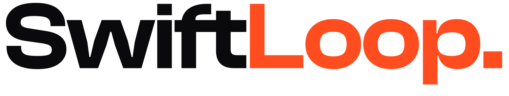
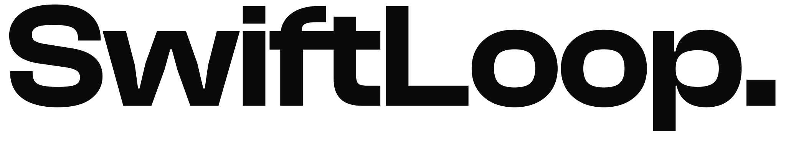

Primary mark

Websites that win clients. AI that runs the rest. Every surface pairs human craft with machine precision: warm cream, dark ink, one signal, and visible system logic.
Designed by hand. Run by machine.The system is intentionally narrow. One dominant statement, one saturated colour, one recurring loop. The restraint makes every application recognisable.

Hairlines, telemetry, precise action.
Outcome first. Mechanism second. Real numbers when the evidence exists. Full stops, never hype.
SwiftLoop sits between a design studio and an automation operator. The identity should always show craft and system in the same frame.
Premium websites connected to AI workflows that qualify, follow up, book, invoice, support and report.
Editorial enough to feel crafted, technical enough to feel capable, restrained enough to feel premium.
Map, Design, Automate and Iterate are not a linear handoff. The ring closes, learns and runs again.
Use the supplied vector assets. Never re-typeset the wordmark. The orange terminal period is the full stop of a confident statement.


| Rule | Digital | Instruction | |
|---|---|---|---|
| minimum.wordmark | 90px wide | 24mm wide | Below this size, use the ring. |
| minimum.ring | 16px | 5mm | Keep the 14-unit stroke on the 100-unit grid. |
| clearSpace | 1 × cap-height of “S” | On every side, measured from the outermost mark. | |
| forbidden | Do not stretch, rotate, recolour, shadow, outline, separate, or remove the orange period. | ||
Light mode is the default expression. Dark mode is the deliberate inverse. Signal Orange remains the only saturated colour.
#ECE8DF
RGB 236 232 223
Default canvas
#14131A
RGB 20 19 26
Primary foreground
#0A0A0C
RGB 10 10 12
Dark canvas / logo
#FF4D1F
RGB 255 77 31
Fills / ring / full stops
Accessibility correction. The website's source Accent Ink `#C4380F` measures about 4.38:1 on Cream, just below WCAG AA for normal text. Use `#B6330E` (about 4.95:1) for small orange text; reserve `#C4380F` and raw Signal Orange `#FF4D1F` for large/bold display or non-text accents. On Ink, small accent text uses `#FF5C31`.
The current website uses three self-hosted faces. Mirava leads, Oxanium explains, Doto reports. They do not trade jobs.
SwiftLoop designs websites that turn attention into enquiries and automates the work behind them—lead follow-up, bookings, invoices and support. The voice is technological without becoming synthetic.
The system looks engineered because its logic stays visible: hairlines, coordinates, counters, states, and the loop itself.
Separate sections and states with low-opacity rules. Avoid generic card shadows and soft floating boxes.
Use a 1–1.5px outline for the supporting half of a headline. Never outline paragraphs or the logo.
Use truthful coordinates, dates, phases and system states. Never invent statistics for decoration.
Use 99px radii for buttons, status chips and segmented controls. Content panels stay square or nearly square.
Fractal noise at 3.5% on light surfaces and 5% on dark surfaces. It should be felt before it is seen.
Use `cubic-bezier(0.22, 1, 0.36, 1)`, masked reveals and directional fills. No bounce or idle floating.
Write like an engineer who designs: short, specific, measured. Claims require evidence. Full stops do more work than exclamation marks.
“Ship in weeks, not quarters.”
“Cutting-edge solutions for everyone!”
Web, documents and print should feel related without becoming identical. Each application keeps the same type roles, palette, hairlines and signal logic.
Light-first surfaces with dark inverse moments, Doto states and directional orange interaction.
A4 cream field, ink header, compact telemetry and decisive total blocks.
85 × 55mm. One dark face, one cream face, orange edge paint optional.